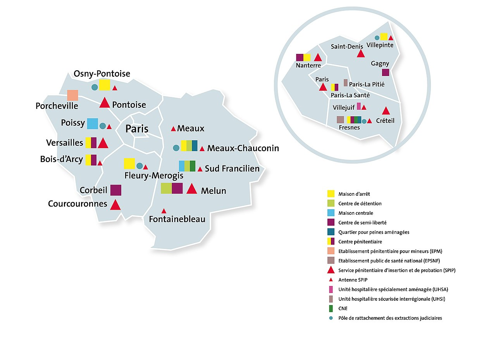

La DISP de Paris
La Direction Interrégionale des Services Pénitentiaires de Paris est un service déconcentré du ministère de la Justice, relevant de la direction de l'administration pénitentiaire.
Elle est l'une des dix directions interrégionales des services pénitentiaires présentes sur le territoire métropolitain et d'outre-mer.
Elle anime, coordonne et contrôle l'activité des établissements et des services pénitentiaires placés sous son autorité, en regroupant les 8 départements franciliens, sur le ressort des cours d'appel de Paris (75) et de Versailles (78).
Les enjeux de la DISP de Paris sont :
- La stabilisation de la population carcérale
- La structuration de la coordination santé justice
- La lutte contre la radicalisation en milieu fermé et ouvert
- Le développement des aménagements de peine
- Le plan interrégional de lutte contre les violences
- La prévention du suicide
Coordonnées
DISP PARIS
3 Avenue de la Division Leclerc
BP 103
94267 Fresnes Cedex
01.88.28.70.00
Organigramme
Le Département des Systèmes d’Information
Le département des systèmes d’information (DSI) est chargé de mettre en oeuvre les applications informatiques nationales et d'assurer la cohérence des systèmes d’informations interrégionaux.
Le département applique toutes les procédures et dispositifs pour assurer la sécurité des systèmes d’information (SSI).
Le DSI détermine, sur la base des orientations définies par l’administration centrale, les modalités de mise en œuvre et de maintenance des infrastructures informatiques, des applications nationales, des activités de support aux utilisateurs et de la sécurité des systèmes d’information. Il associe les autres départements à la conception et à la réalisation des actions interrégionales, ainsi qu’au suivi et à l’évaluation de leur exécution.
En liaison avec les chefs de service et les directeurs des services pénitentiaires d’insertion et de probation, il évalue les besoins en patrimoine informatique, assure la programmation et le financement des nouvelles acquisitions et des renouvellements et supervise leur déploiement.
Il anime le réseau des correspondants locaux du système d’information, situés dans les établissements pénitentiaires et les SPIP, coordonne l’accomplissement de leurs missions et anime leurs actions. Il contribue à la formation des agents aux applications informatiques régionales et apporte conseil et assistance fonctionnelle.